부록: 공통 운영 안내
관리자 로그인
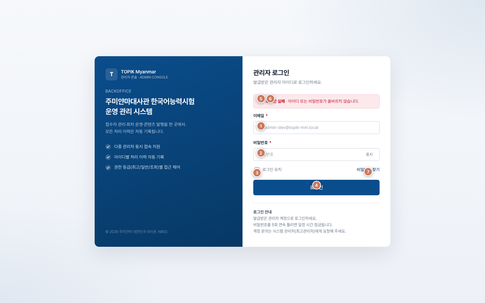
관리자 전용 로그인 화면입니다. 관리자 계정으로만 로그인할 수 있으며, 응시자용 회원 계정(일반 가입·Google 가입)으로는 이 화면에 들어갈 수 없습니다. 계정은 최고관리자가 발급합니다.
| 번호 | 요소 | 설명 |
|---|---|---|
| 1 | 이메일 | 관리자 이메일(로그인 ID). 비어 있으면 「입력 누락」 안내가 표시됩니다. |
| 2 | 비밀번호 | 비밀번호 입력란입니다. 눈 모양 아이콘으로 표시/숨기기를 전환할 수 있습니다. |
| 3 | 로그인 유지 | 체크하면 브라우저를 닫아도 로그인이 유지됩니다. 미체크 시 탭을 닫으면 다시 로그인해야 합니다. |
| 4 | 로그인 버튼 | 이메일·비밀번호를 입력한 뒤 로그인 → 관리 화면으로 이동합니다. |
| 5 | 오류 안내 | 로그인 실패 시 원인별 메시지가 표시됩니다. 이메일·비밀번호 불일치, 5회 연속 실패 시 30분 잠금, 관리자 계정이 아님, 서버 연결 실패 등. |
| 6 | 변경 완료 안내 | 비밀번호를 변경한 뒤 다시 로그인할 때 「비밀번호 변경 완료 · 새 비밀번호로 다시 로그인」 안내가 보입니다. |
| 7 | 비밀번호 찾기 | 비밀번호를 잊었을 때는 최고관리자에게 초기화를 요청합니다. 응시자용 「비밀번호 찾기」와는 별도입니다. |
TIP: 로그인이 5회 연속 실패하면 30분간 잠깁니다. 비밀번호를 확실히 모를 때는 잠금되기 전에 최고관리자에게 초기화를 요청하세요. 이미 로그인된 상태에서 이 주소로 들어오면 바로 관리 화면으로 이동합니다.
로그인 후 보이는 관리 화면의 뼈대입니다. 왼쪽 메뉴에서 업무 화면으로 이동하고, 상단에서 회차와 로그인 사용자 정보를 확인합니다.
관리자 기본 화면
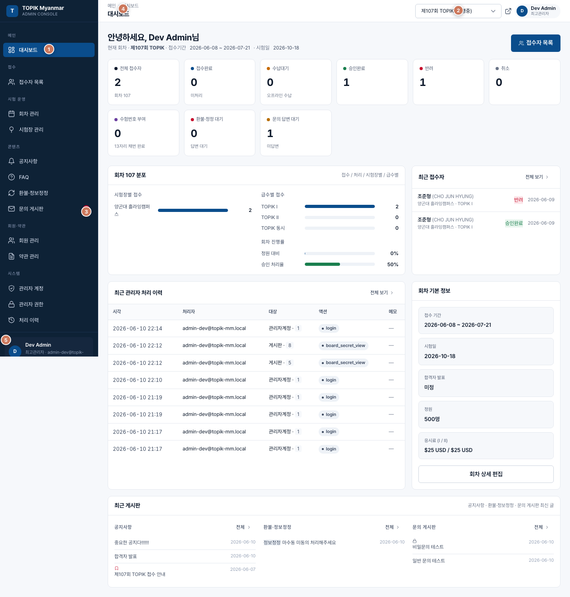
| 번호 | 요소 | 설명 |
|---|---|---|
| 1 | 왼쪽 메뉴 | 메인·접수·시험 운영·콘텐츠·회원·약관·시스템 그룹으로 나뉜 16개 메뉴입니다. 일부 메뉴 옆 숫자 배지가 표시됩니다. |
| 2 | 회차 선택 | 상단에서 작업할 회차를 선택합니다. 옵션에 진행중 / 예정 / 종료 상태가 함께 표시됩니다. |
| 3 | 알림 숫자(배지) | 메뉴마다 집계 기준이 다릅니다. 접수자 목록 = 선택 회차의 미수납 건수(취소·반려·환불자 제외). 환불·정보정정 = 접수·검토중 신청. 문의 게시판 = 답변 대기. 0건이면 배지가 보이지 않습니다. |
| 4 | 상단 바 | 현재 위치·화면 제목·회차 선택·응시자 사이트 새 창 링크·로그인 사용자(이름·등급)가 표시됩니다. |
| 5 | 사용자/로그아웃 | 이름·역할(최고/일반/조회)이 표시됩니다. 로그아웃 → 확인 후 로그인 화면으로 이동합니다. |
데이터를 불러오는 동안 상단에 진행 안내가 잠시 표시됩니다. 오류가 나면 빨간 안내 띠가 나타나니, 메시지를 확인한 뒤 다시 시도하거나 네트워크 상태를 점검해 주세요.
첫 로그인·비밀번호 변경이 필요한 경우, 다른 메뉴를 사용하기 전에 새 비밀번호(8자 이상, 영문·숫자·특수문자 포함, 현재 비밀번호와 달라야 함)를 설정해야 합니다.
TIP: 접수 업무 전에 상단 회차 선택이 올바른지 꼭 확인하세요. 다른 회차를 선택한 채 수납·승인을 하면 혼선이 생길 수 있습니다.
대시보드
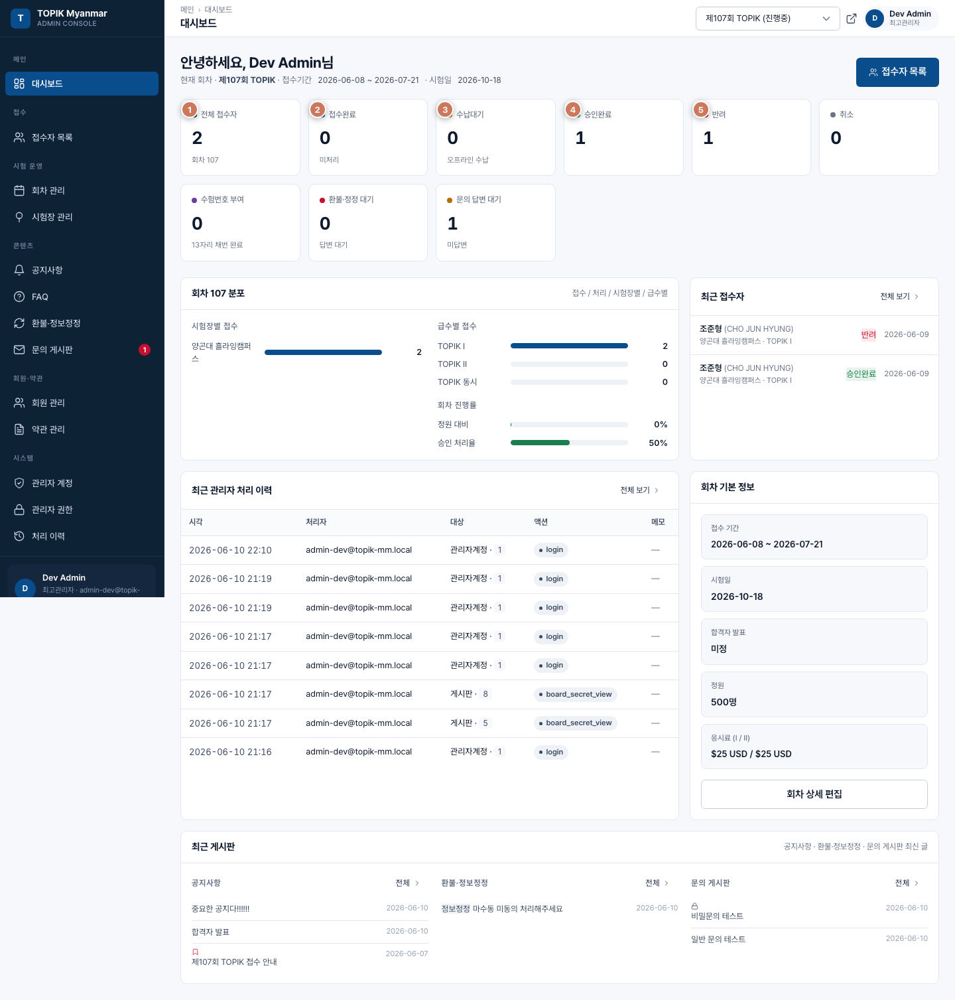
선택한 회차의 접수 현황을 숫자로 한눈에 보여 주는 화면입니다. 회차를 바꾸면 모든 KPI가 다시 계산됩니다. 아침 업무 시작 시 「오늘 처리할 건이 얼마나 있는지」 파악하는 데 유용합니다.
| 번호 | KPI 카드 | 의미 (선택한 회차 기준) | 활용 팁 |
|---|---|---|---|
| 1 | 전체 접수자 | 현재 회차 접수 건수(취소 포함 전체) | 회차 규모·접수 추이 파악 |
| 2 | 접수완료 | 온라인 접수는 끝났으나 사진·수납·승인 처리가 남은 건 | 사진 심사·수납 대기 포함 |
| 3 | 수납대기 | 사진 승인 후 오프라인 수납 전 건 | 현장 수납 확인 후 오프라인 수납 처리 |
| 4 | 승인완료 | 승인 처리 완료(또는 수험번호 부여 완료) 건 | 최종 확정·수험번호 부여 대상 확인 |
| 5 | 반려 | 접수 또는 사진 반려 건 | 재접수 대기·사유 확인 필요 |
TIP: 「수납대기」 숫자가 많으면 접수자 목록 → 상태 수납대기 필터로 들어가 순차 처리하세요. 「접수완료」가 많으면 사진 심사가 밀린 상태일 수 있습니다.
접수자 심사·수납·승인·수험번호 부여의 핵심 업무 화면입니다. 하루 대부분의 시간을 이 화면에서 보내게 됩니다.
접수자 목록
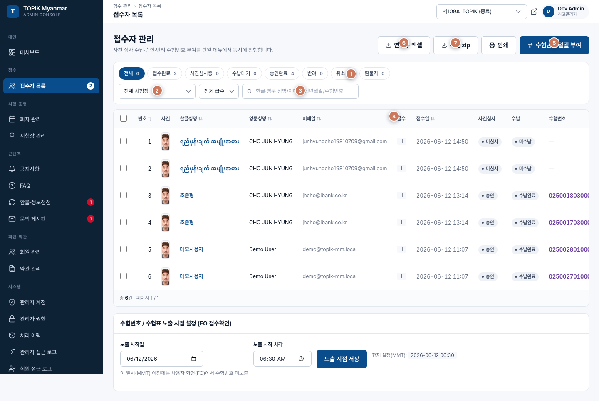
스크린샷 ● 번호는 1~4이며, 급수 필터는 2번(시험장·급수) 에 포함됩니다.
| 번호 | 요소 | 설명 |
|---|---|---|
| 1 | 상태 필터 | 전체 / 접수완료 / 사진심사중 / 수납대기 / 승인완료 / 반려 / 취소 / 환불. 각 칩에 건수가 표시되어, 어디부터 처리할지 판단하기 쉽습니다. |
| 2 | 시험장·급수 | 시험장(활성 시험장만)과 급수(Ⅰ / Ⅱ / 동시)로 목록을 좁힙니다. 현장·급수별로 묶어 처리할 때 사용합니다. |
| 3 | 검색 | 한글·영문 이름, 이메일, 생년월일, 수험번호 일부만 입력해도 검색됩니다. 응시자가 전화·이메일로 문의할 때 빠르게 찾을 수 있습니다. |
| 4 | 접수자 표 | 체크박스, 이름, 사진, 사진심사·수납·상태, 수험번호, 상세보기 버튼. 한 페이지에 12행씩 표시됩니다. 상세보기로 한 건씩 자세히 처리할 수 있습니다. |
목록 자동 갱신: FO에서 새 접수가 들어오면 대시보드·접수자 목록 화면에서 약 20초마다, 또는 다른 탭에서 BO로 돌아올 때(창 포커스) 목록이 자동으로 다시 불러와집니다. 상단 회차 선택이 FO 접수 회차와 같아야 해당 건이 보입니다. 전체 새로고침 없이도 대부분 반영되지만, 즉시 확인이 필요하면 F5로 수동 새로고침할 수 있습니다.
여러 건을 한꺼번에 처리할 때 사용합니다. 표 왼쪽 체크박스로 1건 이상 선택하면 화면 하단에 고정 바가 나타납니다.
| 버튼 | 대상·조건 | 결과 | 참고 |
|---|---|---|---|
| 사진 일괄 승인 | 선택 건 중 아직 사진 승인 안 된 건 | 처리 건수 안내 | 규격 OK인 사진만 선택해 주세요 |
| 오프라인 수납 | 수납 권한 보유, 사진 승인 완료 건 | 수납 확인 창 열림 | 현장 수납·영수증 확인 후 처리 |
| 승인 | 승인 권한 보유 | 승인 확인 창 | 사진 미심사 또는 미수납 건이 포함되면 승인 불가 |
| 반려 | 반려 권한 보유 | 반려 확인 창 | 반려 사유 필수, 응시자에게 안내 발송 |
| 수납 취소(환불) | 수납 완료 건만 | 수납 취소 확인 창 | 환불 업무와 연계 |
TIP: 처음에는 상세보기로 1건씩 처리해 보고, 익숙해지면 같은 상태·같은 시험장 건을 묶어 일괄 처리하세요.
상세보기·일괄 처리·수험번호 일괄 부여 등으로 열리는 우측 슬라이드 패널(LP) 또는 가운데 확인 모달입니다. 별도 「사진 심사」 메뉴는 없으며, 사진 심사는 접수자 상세 패널 안에서 처리합니다.
접수자 상세
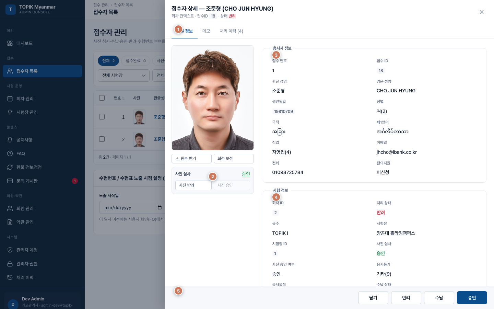
| 번호 | 요소 | 설명 |
|---|---|---|
| 1 | 탭 | 기본 정보 / 메모 / 처리 이력 (N). 메모는 담당자끼리 공유하는 용도입니다. 처리 이력 탭의 숫자(N)는 이 접수 건에 대한 관리자 처리 건수만 표시합니다(전체 처리 이력 메뉴와 별개). |
| 2 | 사진 심사 | 왼쪽 증명사진 확대·회전·원본 받기 + 사진 승인/반려. 반려 시 사유 선택(기타는 상세 입력). 별도 사진 심사 창 없이 여기서 처리합니다. |
| 3 | 응시자 정보 | 이름·연락처·이메일·가입 정보·접수 시 입력한 직업·동기 등. |
| 4 | 시험 정보 | 회차·급수·시험장·현재 상태·접수번호·수험번호·수납 상태 등. |
| 5 | 하단 버튼 | 반려·수납·수납취소·승인 — 권한과 접수 상태에 따라 활성/비활성. 승인은 사진 승인 + 수납 완료 후에만 누를 수 있습니다. 회색이면 이전 단계(사진·수납)가 남았거나 권한이 없는 경우입니다. |
상세 창 갱신: 같은 상세 창을 연 채로 사진 승인·수납·승인을 처리하면, 창을 닫지 않아도 상태·수납·사진 심사 결과·처리 이력이 곧바로 갱신됩니다.
오프라인 수납
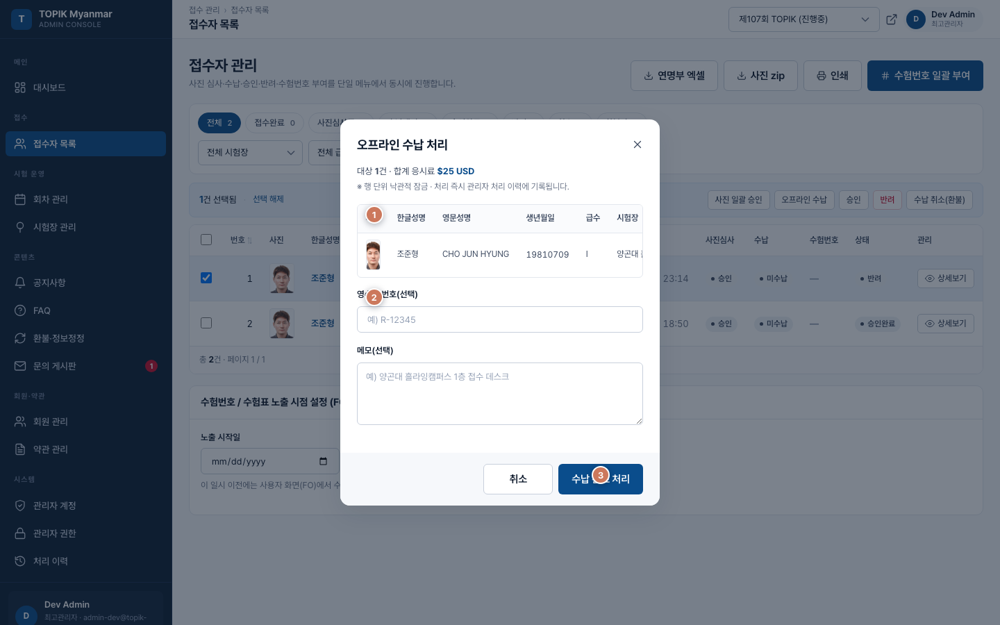
| 번호 | 요소 | 설명 |
|---|---|---|
| 1 | 대상 목록 | 선택한 접수자와 합계 응시료가 표시됩니다. Ⅰ·Ⅱ 동시 접수 시 급수별로 각각 수납해야 합니다. |
| 2 | 영수증·메모 | 현장에서 받은 영수증 번호·메모(선택)를 입력합니다. 나중에 감사·환불 확인에 도움이 됩니다. |
| 3 | 수납 완료 | 내용 확인 후 수납 완료 → 해당 건이 수납 완료 상태로 바뀝니다. |
승인 확인
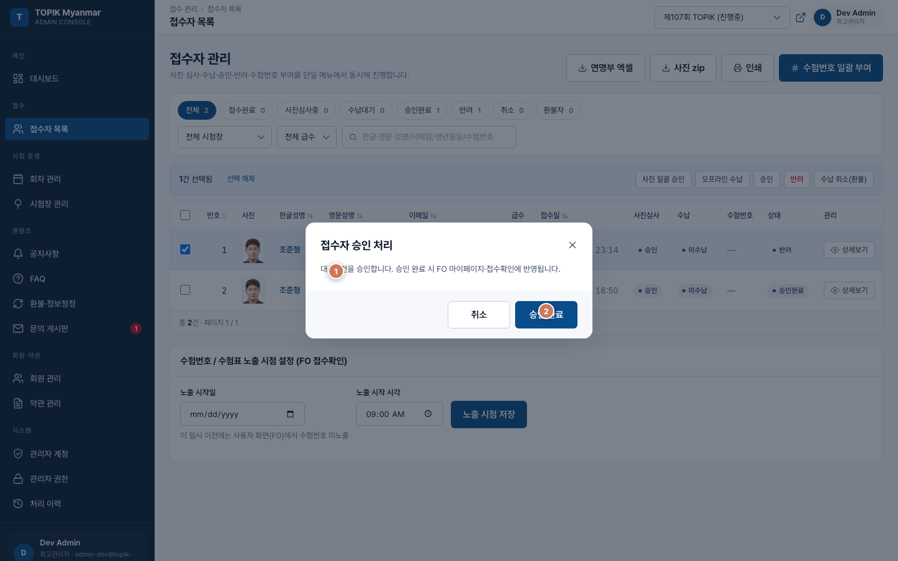
| 번호 | 요소 | 설명 |
|---|---|---|
| 1 | 승인 대상 안내 | 승인할 건수와 주의사항. 사진 미심사 또는 미수납 건이 포함되면 승인할 수 없으며, 해당 응시자 목록이 안내에 표시됩니다. |
| 2 | 승인 실행 | 사진 승인·수납이 모두 완료된 건만 승인 완료 가능 → 응시자에게 승인 안내 이메일이 발송될 수 있습니다. |
반려 확인
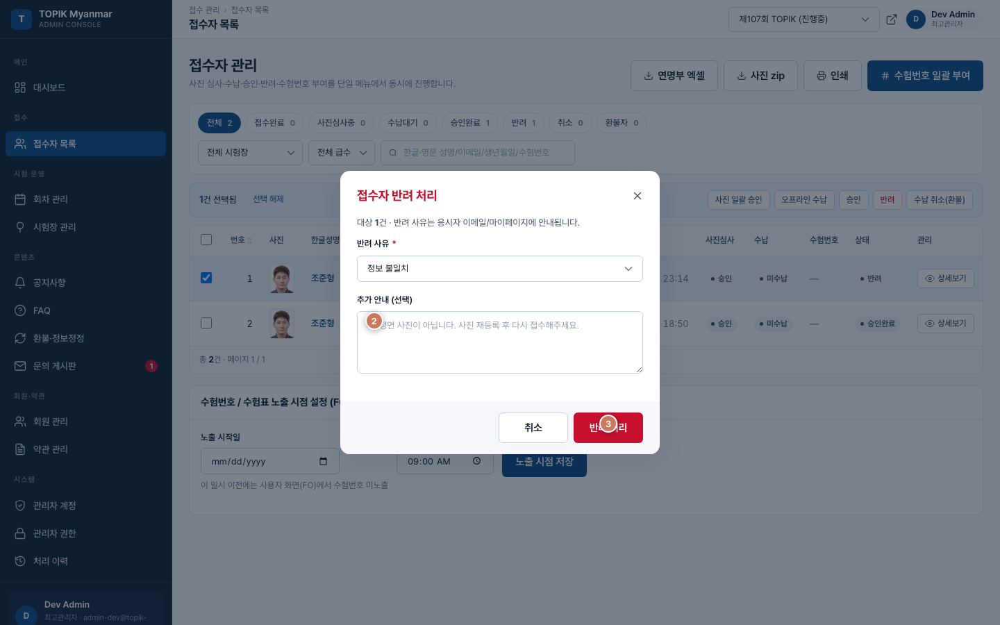
| 번호 | 요소 | 설명 |
|---|---|---|
| 1 | 반려 사유 | 목록에서 선택(기타는 상세 입력). 응시자가 마이페이지에서 볼 수 있으니 명확하게 작성하세요. |
| 2 | 추가 안내 | 응시자에게 전달될 보충 설명(재접수 방법 등). |
| 3 | 반려 실행 | 확인 후 반려 처리 + 응시자 안내. |
수험번호 일괄 부여
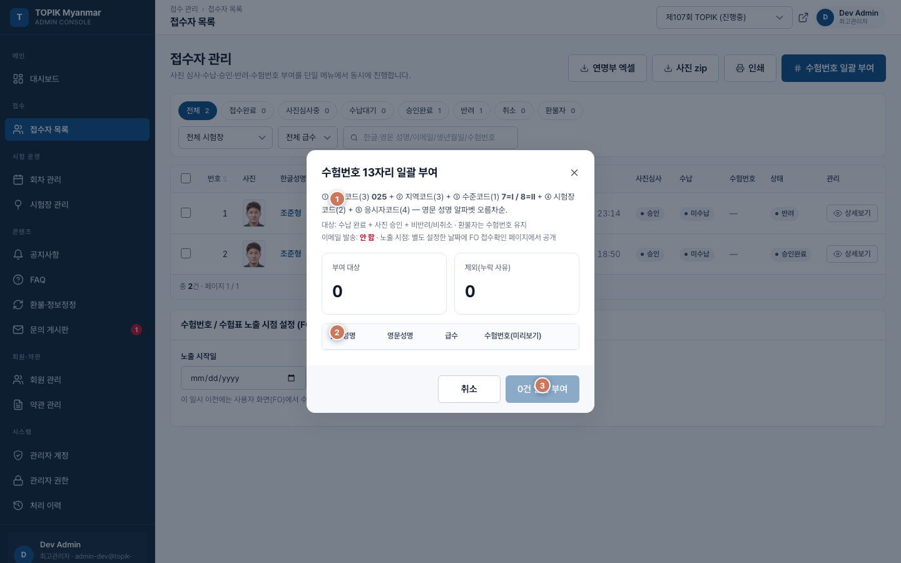
| 번호 | 요소 | 설명 |
|---|---|---|
| 1 | 부여 요약 | 부여 대상 건수와 조건 안내. 조건 미충족 건은 목록에서 제외됩니다. |
| 2 | 미리보기 표 | 실제 부여될 13자리 수험번호를 미리 보여 줍니다. 저장 전 번호·순서를 꼭 확인하세요. |
| 3 | 부여 확정 | 확인 후 실제 부여. 최고관리자만 실행할 수 있습니다. |
13자리 구성: 국가(025) + 지역(3) + 수준(Ⅰ=7, Ⅱ=8) + 시험장(2) + 응시자(4). 예: 0250017010001 → 미얀마(025) · 양곤(001) · TOPIK Ⅰ(7) · 시험장 01 · 0001번 응시자
부여 대상: 접수자 목록 상태 승인완료 + 아직 수험번호 없음 (내부 조건: status=approved, 사진 승인·수납 완료 포함. 접수완료·수납대기만 된 건은 미리보기 0건.) 권한: 최고관리자(super) 만 버튼 활성·API 실행 가능. 일반관리자는 비활성. 정렬: 시험장·급수별, 영문 이름 가나다/알파벳 순 노출: 「노출 시점」 일시 이전에는 응시자 접수 확인(마이페이지) 화면에 수험번호가 표시되지 않습니다. 노출일 이후에 늦게 승인된 건도 부여는 가능하며, 노출 시점이 이미 지났으면 FO에 바로 표시될 수 있습니다.
지역/시험장/급수/수험번호.jpg 폴더 구조. 사진이 없는 건은 누락 리포트에 기록됩니다.회차 관리
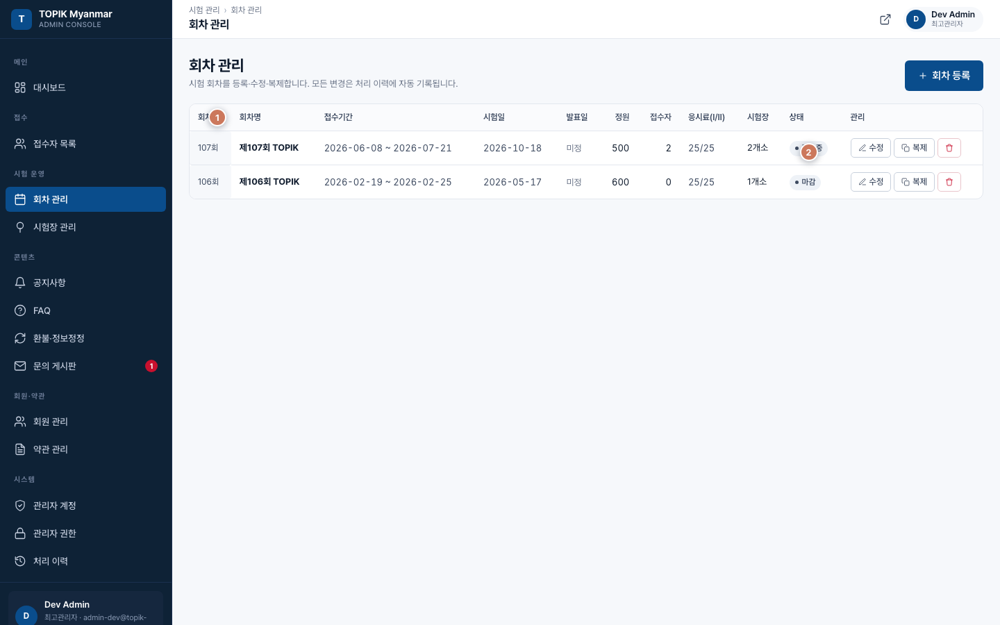
시험 회차(제N회)를 등록·수정·폐지하는 화면입니다. 접수 기간·시험일·응시료·배정 시험장을 여기서 설정합니다.
| 번호 | 요소 | 설명 |
|---|---|---|
| 1 | 회차 목록 | 회차번호·회차명·접수기간·시험일·합격 발표일·정원·접수자 수·응시료·시험장 수·상태·관리 버튼. |
| 2 | 상태 표시 | 예정·접수중·마감·폐지 — 접수 시작·마감 일시 기준으로 자동 전환됩니다(수동으로 「접수중」 버튼을 누르는 방식이 아님). |
회차 등록/수정
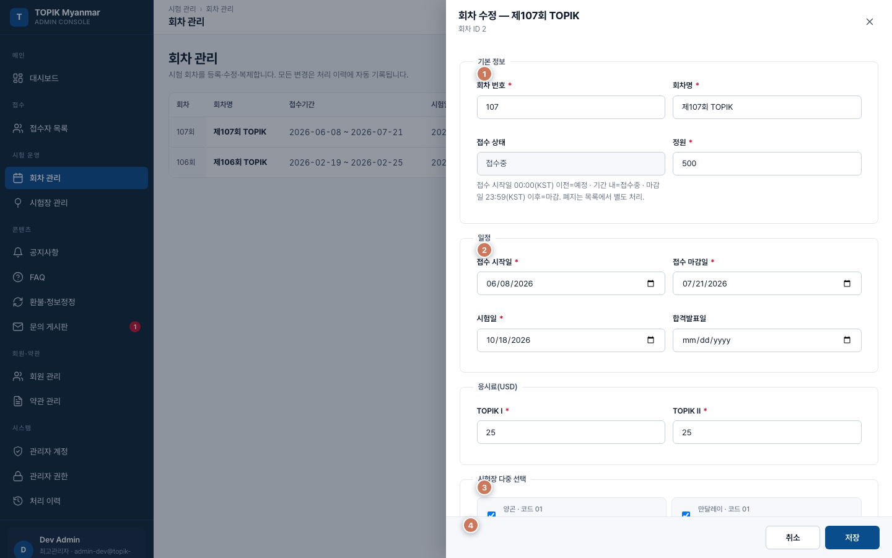
| 번호 | 요소 | 설명 |
|---|---|---|
| 1 | 기본 정보 | 회차번호·회차명·정원 등. 회차명은 응시자 화면에도 표시됩니다. |
| 2 | 일정 | 접수 시작·마감·시험일·합격 발표일. 접수시작 ≤ 접수마감 ≤ 시험일 순서를 지켜야 등록/저장이 가능합니다. 마감일을 시작일보다 앞으로 두면 공지사항과 같이 「접수 마감일은 접수 시작일 이후여야 합니다」 토스트가 표시되고 날짜가 반영되지 않습니다. |
| 3 | 응시료·시험장 | TOPIK Ⅰ·Ⅱ USD 금액, 이 회차에 열릴 시험장 다중 선택. |
| 4 | 저장/취소 | 필수 항목·일정 검증을 통과하면 등록/저장 버튼이 활성화됩니다. 저장 성공 시 목록이 자동으로 갱신됩니다. |
저장 전 확인: 회차명·일정 필수, 응시료 > 0, 활성 시험장 1개 이상 선택. 폐지: 확인 후 회차가 비공개됩니다(기존 접수자 데이터는 유지). 복제 기능으로 이전 회차 설정을 다음 회차에 복사할 수 있어, 매회 비슷한 설정을 다시 입력하는 수고를 줄일 수 있습니다.
TIP: 접수 시작 전에 시험장 관리에서 활성 시험장·정원을 먼저 맞춰 두고, 회차 등록 시 시험장을 배정하세요.
시험장 관리
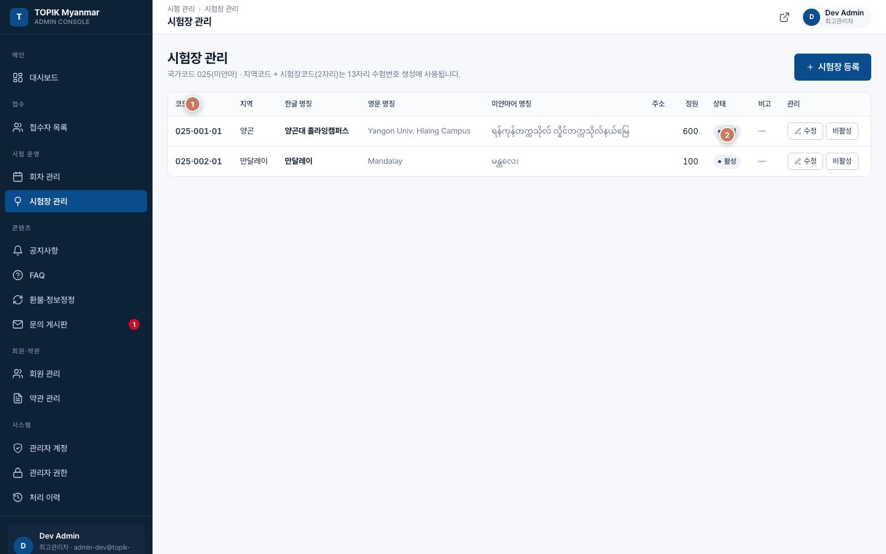
시험 장소(도시·건물)와 정원, 시험장 코드를 관리합니다. 시험장 코드는 수험번호 13자리에 들어가므로, 등록 후 임의 변경은 피하세요.
| 번호 | 요소 | 설명 |
|---|---|---|
| 1 | 시험장 목록 | 코드·지역·한/영/미얀마어 명칭·주소·정원·상태·비고. |
| 2 | 활성/비활성 | 비활성 시험장은 회차 배정·접수자 필터 목록에서 제외됩니다. 폐쇄·미사용 장소는 비활성 처리하세요. |
시험장 등록/수정
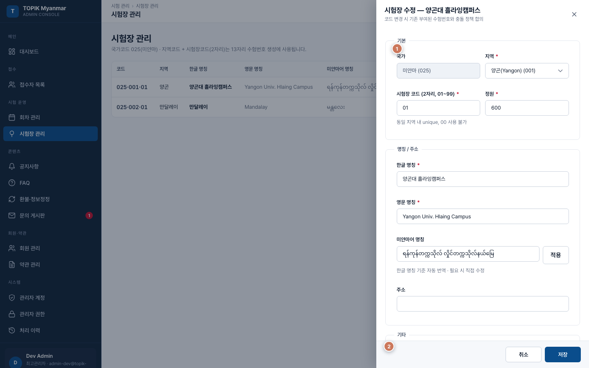
| 번호 | 요소 | 설명 |
|---|---|---|
| 1 | 입력 항목 | 지역·시험장 코드(2자리)·정원·한/영/미얀마어 명칭·주소·비고. |
| 2 | 저장/취소 | 한글·영문 명칭·정원 > 0 필수. 같은 지역 안에서 코드 중복 불가. 저장·활성 전환 후 목록이 자동 갱신됩니다(페이지 새로고침 불필요). |
비고란: 좌석 배치도 URL, 현장 책임자, 연락처 등 운영에 필요한 메모를 자유롭게 적어 두면 현장 운영 시 도움이 됩니다.
공지사항
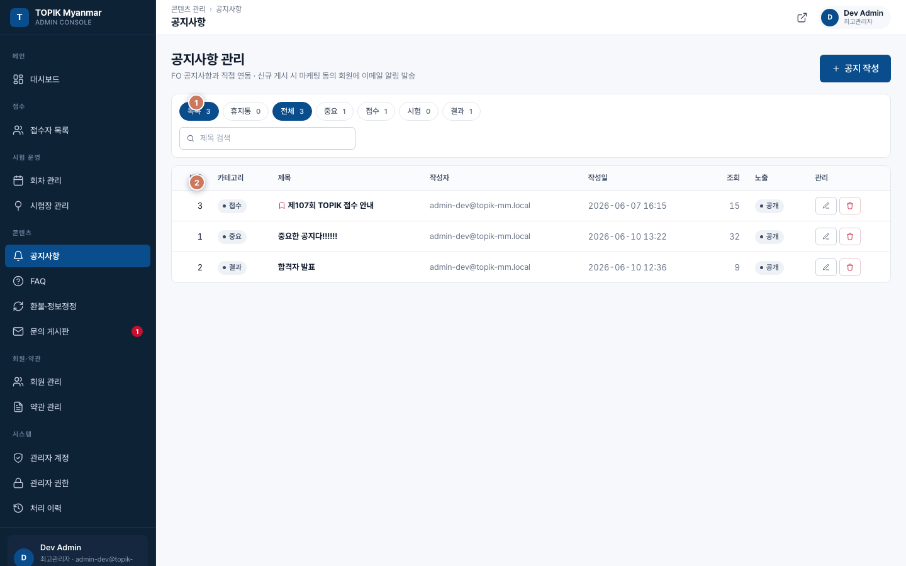
응시자 공지사항 게시판 글을 작성·수정·삭제합니다. 접수 일정·시험 유의사항·결과 안내 등 중요 공지는 상단 고정과 중요 카테고리를 활용하세요.
| 번호 | 요소 | 설명 |
|---|---|---|
| 1 | 탭·카테고리 | 목록 / 휴지통 + 중요·접수·시험·결과 필터 + 검색. |
| 2 | 공지 목록 | 상단 고정 글이 먼저, 그다음 작성일 최신순. |
공지 작성/수정
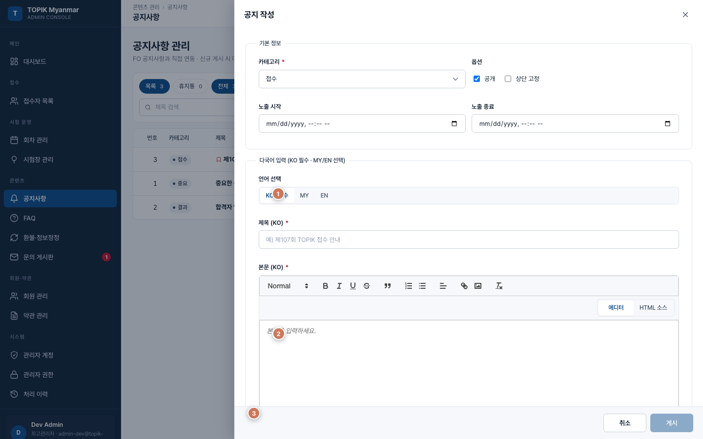
| 번호 | 요소 | 설명 |
|---|---|---|
| 1 | 언어 탭 | KO / MY / EN — 제목·본문을 언어별로 입력. 한국어는 필수, 미얀마어·영어는 선택(미입력 시 해당 언어 사용자에게 한국어가 보일 수 있음). |
| 2 | 본문 편집 | 글꼴·목록·링크·이미지 등 리치 텍스트 + 첨부 파일. |
| 3 | 저장/게시 | 공개 여부·상단 고정·노출 기간 설정 후 저장. |
첨부: 최대 5개, 파일당 10MB. 마케팅 발송: 새로 공개하는 공지를 등록하면, 마케팅 수신에 동의한 회원에게 제목 + 링크 이메일이 발송됩니다(본문 전체가 아님). 삭제: 휴지통에 30일 보관 후 영구 삭제. 그 전에는 복구 가능.
TIP: 다국어 공지는 한국어 초안을 먼저 작성한 뒤 MY·EN 탭으로 옮기면 실수를 줄일 수 있습니다.
FAQ
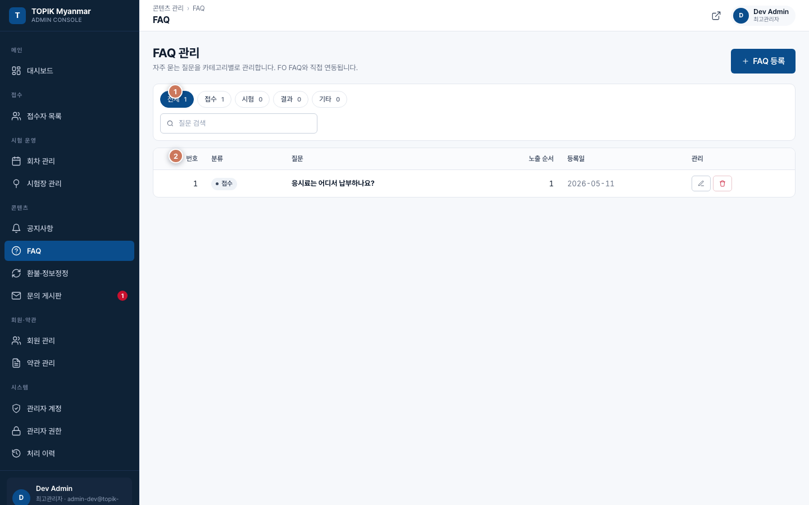
응시자 자주 묻는 질문을 등록·수정합니다. 문의 게시판 부담을 줄이려면 접수·수납·수험표 등 반복 질문을 FAQ에 먼저 올려 두세요.
| 번호 | 요소 | 설명 |
|---|---|---|
| 1 | 카테고리·검색 | 접수 / 시험 / 결과 / 기타 + 질문 키워드 검색. |
| 2 | FAQ 목록 | 카테고리·노출 순서(작을수록 위) 기준 정렬. |
FAQ 등록/수정
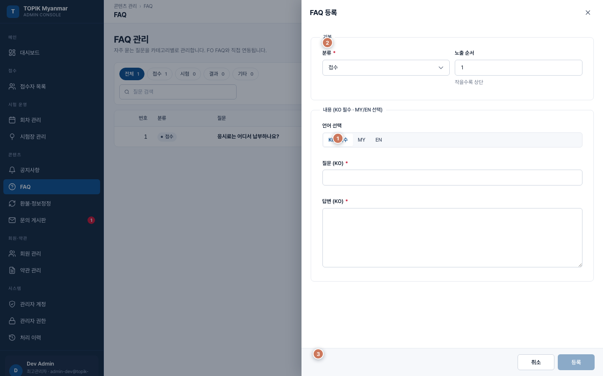
| 번호 | 요소 | 설명 |
|---|---|---|
| 1 | 언어 탭 | KO/MY/EN 질문(120자)·답변(3000자). 한국어 필수. |
| 2 | 분류·순서 | 카테고리·노출 순서. 자주 묻는 항목은 순서 번호를 작게(예: 1, 2, 3). |
| 3 | 저장/삭제 | 저장 또는 삭제(확인 후). 삭제한 FAQ는 BO 목록·FO FAQ에서 더 이상 보이지 않으며, 페이지를 새로고침해도 복구되지 않습니다(비활성 처리). |
환불·정보정정
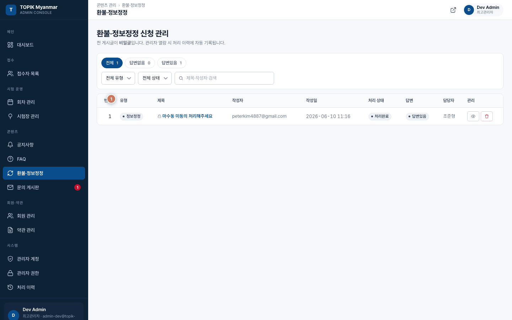
응시자가 환불·정보정정 게시판에 올린 신청을 처리합니다. 모든 글이 비밀글이며, 관리자가 상세를 열면 열람 이력이 자동 기록됩니다(감사·분쟁 대비).
| 번호 | 요소 | 설명 |
|---|---|---|
| 1 | 신청 목록 | 유형(환불/정보정정)·상태·검색 필터. 제목을 클릭하면 상세 슬라이드 패널이 열립니다. |
환불·정정 상세
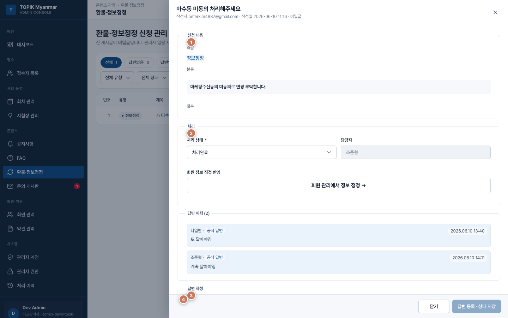
| 번호 | 요소 | 설명 |
|---|---|---|
| 1 | 신청 내용 | 유형·본문·첨부(영수증·신분증 사본 등). |
| 2 | 처리 상태 | 접수 / 검토중 / 처리완료 / 반려 + 담당자. 상태를 단계별로 바꿔 응시자가 진행 상황을 알 수 있게 합니다. |
| 3 | 답변·댓글 | 공식 답변 이력(누적) + 댓글·대댓글. |
| 4 | 답변 등록·저장 | 상태 변경 + 답변 작성 → 답변 등록·상태 저장. 답변 없이 상태만 바꿀 수 없습니다. |
환불 유형: 환불 금액·방법 입력란이 추가로 표시됩니다. 응시료 규정의 환불률 표와 맞춰 처리하세요. 정보정정: 회원 관리 화면으로 바로가기 링크가 있어, 승인 후 회원 정보를 수정할 수 있습니다.
TIP: 「검토중」으로 바꾼 뒤 내부 확인이 끝나면 「처리완료」+ 답변으로 마무리하면 응시자 혼란이 줄어듭니다.
문의 게시판
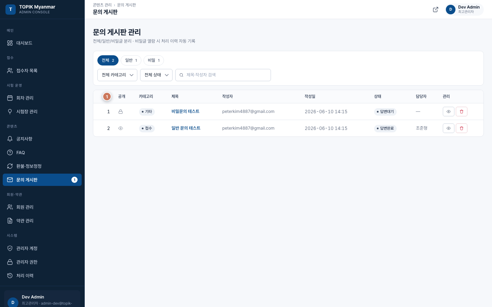
응시자 1:1 문의를 확인·답변합니다. 비밀글은 작성자와 관리자만 본문을 볼 수 있습니다.
| 번호 | 요소 | 설명 |
|---|---|---|
| 1 | 문의 목록 | 전체 / 일반 / 비밀 탭 + 카테고리·상태·검색. 제목을 클릭하면 상세 슬라이드 패널이 열립니다. 메뉴 진입·다른 창에서 BO로 돌아올 때 목록이 자동으로 다시 불러와져, FO 신규 문의가 전체 새로고침 없이 반영됩니다. |
문의 상세
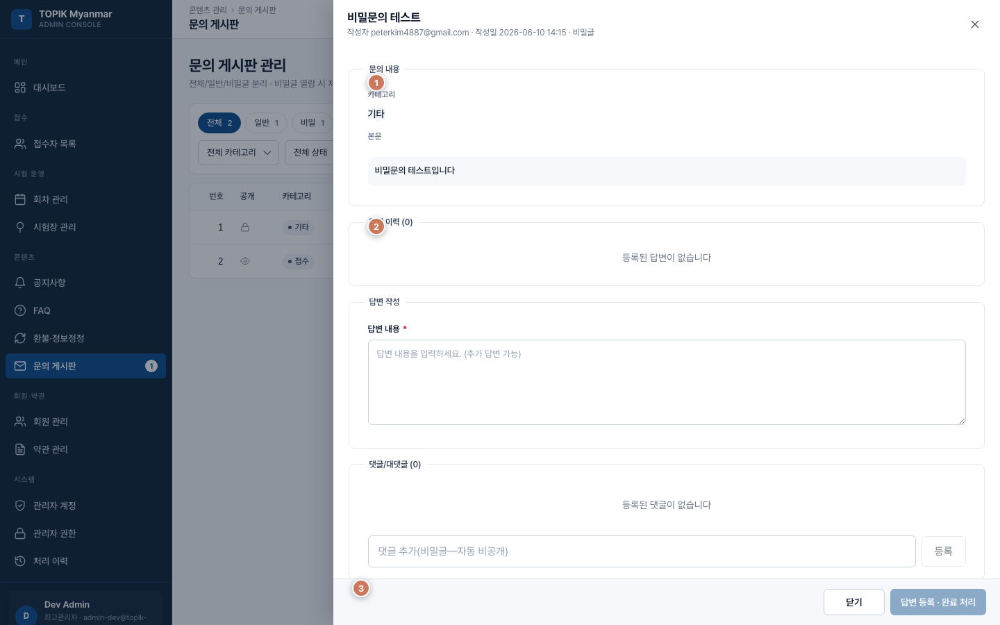
| 번호 | 요소 | 설명 |
|---|---|---|
| 1 | 문의 내용 | 제목·본문·첨부·비밀글 여부. |
| 2 | 답변·댓글 | 공식 답변 이력 + 댓글. 일반글 댓글은 공개 여부 선택, 비밀글 댓글은 자동 비공개. |
| 3 | 답변 등록·완료 | 답변 등록·완료 처리 → 상태를 답변완료로 바꿀 수 있습니다. |
TIP: FAQ에 이미 있는 내용이면 답변에 FAQ 링크를 안내하고, 필요 시 FAQ 문구를 보강하세요.
회원 관리
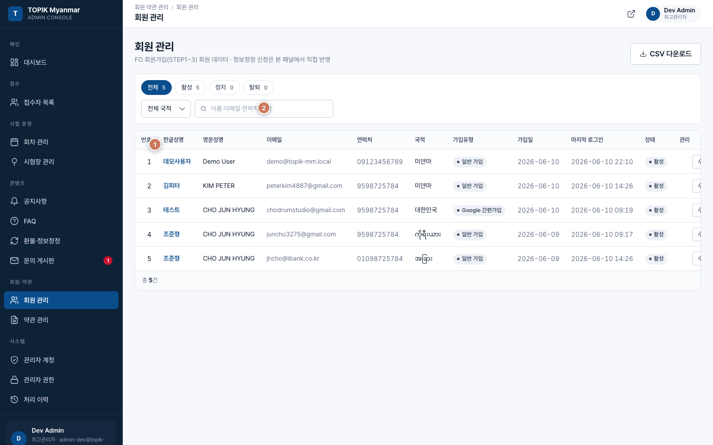
가입 회원 조회·정지·탈퇴·비밀번호 초기화. 접수자 목록과 달리 회원 계정 단위로 관리합니다.
| 번호 | 요소 | 설명 |
|---|---|---|
| 1 | 회원 목록 | 상태·국적·검색 필터. 이름·이메일·가입유형(이메일/Google)·상태·관리 버튼. |
| 2 | 검색 | 이름·이메일·연락처로 검색. |
회원 상세
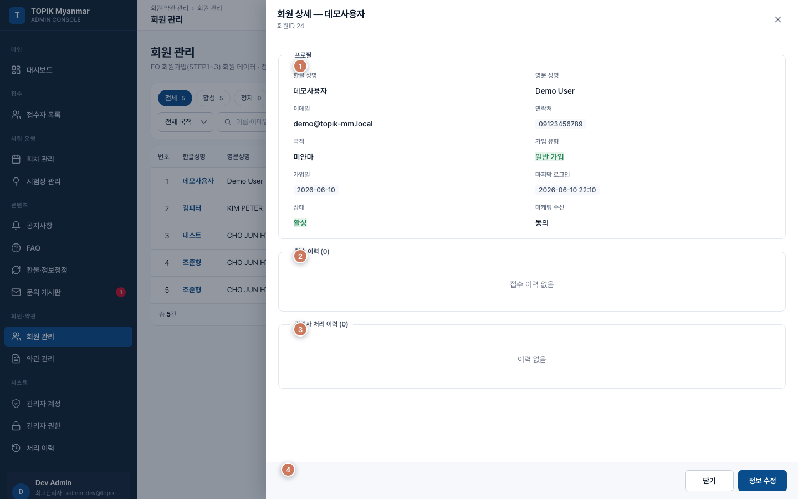
| 번호 | 요소 | 설명 |
|---|---|---|
| 1 | 프로필 | 가입 정보·연락처·마케팅 수신 동의 등. |
| 2 | 접수 이력 | 이 회원의 모든 접수 건 목록. |
| 3 | 처리 이력 | 이 회원과 관련된 관리자 처리 타임라인. |
| 4 | 관리 버튼 | 정보 수정·정지·해제·탈퇴·비밀번호 초기화. |
정지: 사유 필수. 정지 시 로그인 중인 세션이 무효화됩니다. 탈퇴: 「진행 중 접수가 모두 취소됩니다」 경고 후 처리. 복구 불가. 비밀번호 초기화: 임시 비밀번호를 한 번만 화면에 표시하고 이메일로도 보냅니다. Google 가입 회원은 이 기능을 사용할 수 없습니다(Google에서 비밀번호 관리).
약관 관리
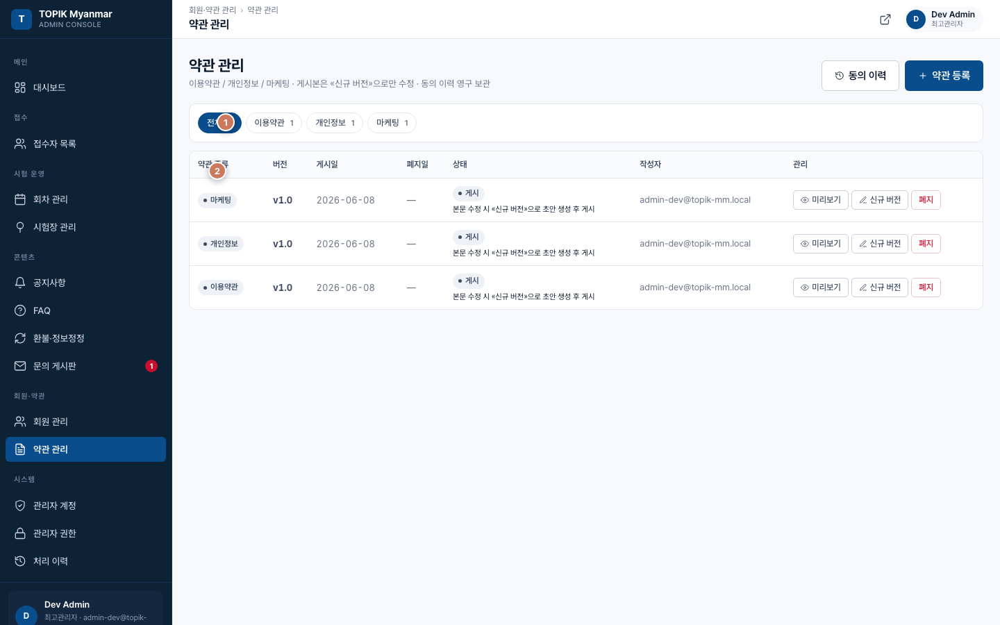
이용약관·개인정보처리방침·마케팅 수신 약관의 버전을 관리합니다. 게시 시 응시자·회원 가입·동의 화면에 반영됩니다.
| 번호 | 요소 | 설명 |
|---|---|---|
| 1 | 약관 종류·목록 | 이용약관 / 개인정보 / 마케팅. 버전·게시일·상태(초안 / 게시 / 폐지). |
| 2 | 버전 목록 | 게시일 최신순. 게시 중 버전이 현재 유효본입니다. |
약관 등록/수정
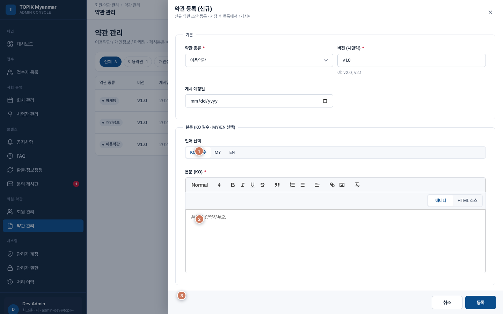
| 번호 | 요소 | 설명 |
|---|---|---|
| 1 | 언어 탭 | KO/MY/EN 본문. 한국어 필수. |
| 2 | 본문 편집 | 약관 전문 입력. |
| 3 | 저장/게시/폐지 | 초안 저장 → 검토 후 게시(최고관리자). 같은 종류의 기존 게시본은 자동 폐지. 이미 게시된 버전은 내용 수정 대신 신규 버전을 만들어야 합니다. |
동의 이력: 회원·약관별 동의 시각 조회 및 CSV 내보내기(감사·분쟁 대비 자료).
관리자 계정
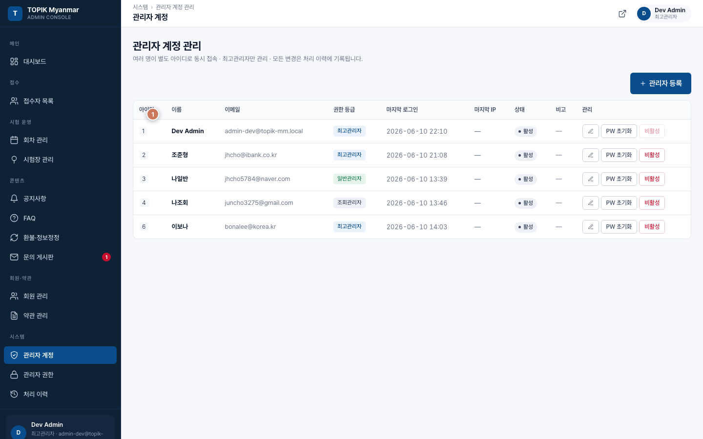
관리자 계정 등록·수정·비활성화. 최고관리자만 이 메뉴를 사용할 수 있습니다.
| 번호 | 요소 | 설명 |
|---|---|---|
| 1 | 관리자 목록 | 아이디·이름·이메일·권한 등급·마지막 로그인·상태·관리. |
관리자 등록
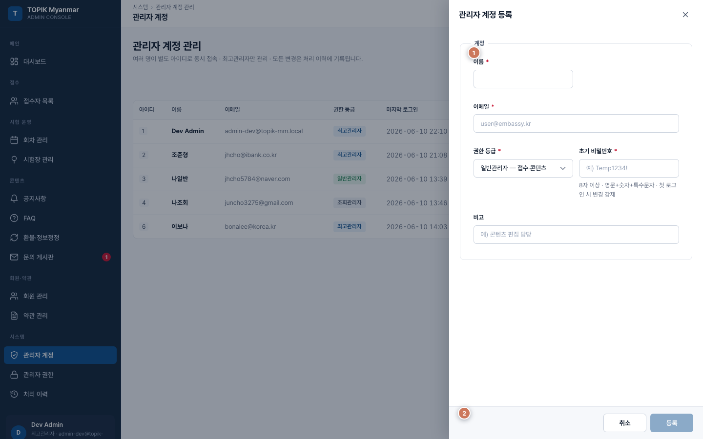
| 번호 | 요소 | 설명 |
|---|---|---|
| 1 | 입력 항목 | 이름·이메일·권한 등급(최고/일반/조회)·초기 비밀번호·비고. |
| 2 | 저장/취소 | 저장 후 해당 관리자는 첫 로그인 시 비밀번호 변경이 강제됩니다. |
비밀번호 초기화: 임시 비밀번호 발급(약 5초간 화면 표시) + 이메일 발송. 본인 계정은 비활성화할 수 없습니다.
TIP: 현장 담당자에게는 일반관리자, 통계·감사만 필요한 분에게는 조회관리자를 부여하는 것을 권장합니다.
관리자 권한
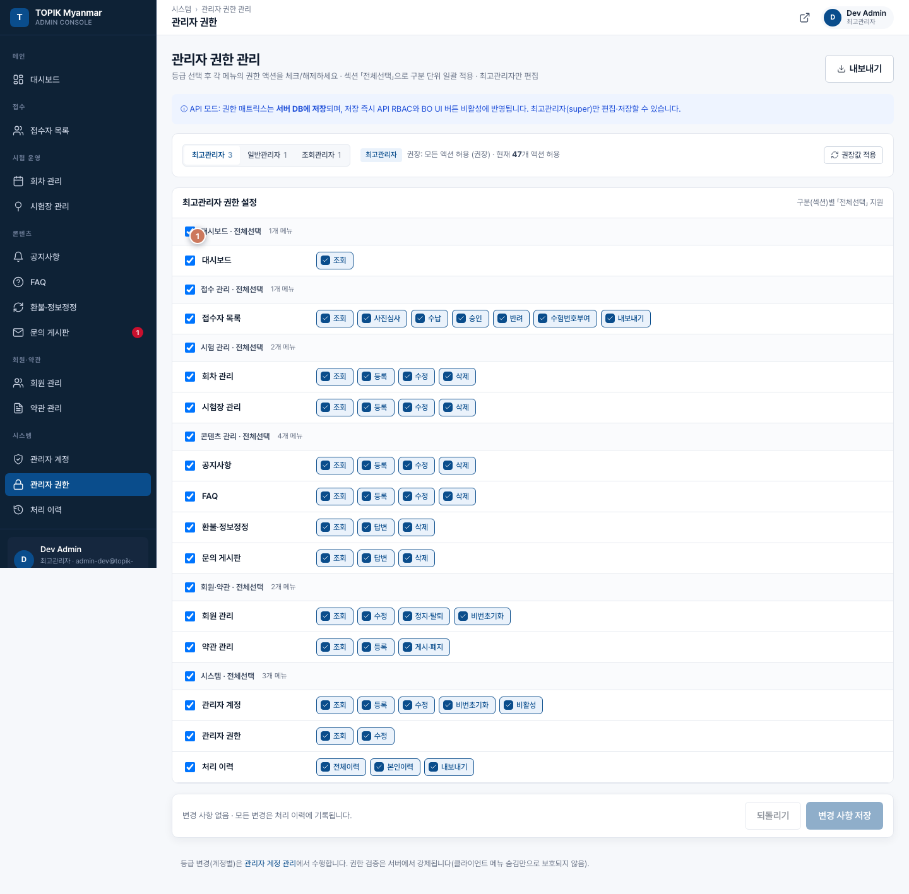
메뉴별 조회·등록·수정·삭제·사진심사·수납·승인·반려·수험번호·내보내기 권한을 표로 참고할 수 있습니다. 실제 화면에서 버튼이 보이는지는 로그인한 계정 등급이 기준입니다.
| 번호 | 요소 | 설명 |
|---|---|---|
| 1 | 권한 표 | 메뉴(행) × 권한 종류(열). O/X 또는 등급별 표시. 교육·점검용 참고 자료입니다. |
| 메뉴 | 최고관리자 | 일반관리자 | 조회 |
|---|---|---|---|
| 접수자 | 전체(수험번호·내보내기 포함) | 사진·수납·승인·반려 | 조회만 |
| 회차·시험장 | 전체 | 조회 | 조회 |
| 공지·FAQ | 전체 | 등록·수정·삭제 | 조회 |
| 환불·문의 | 전체 | 조회·답변 | 조회 |
| 회원·약관 | 전체 | 조회 | 조회 |
| 관리자·권한 | 전체 | 메뉴 없음 | 메뉴 없음 |
| 처리 이력 | 전체 | 본인 처리만 | 본인 처리만 |
| 접근 로그·권한 이력 | 전체 | 메뉴 없음 | 메뉴 없음 |
권한 표는 CSV 내보내기로 저장할 수 있습니다.
처리 이력
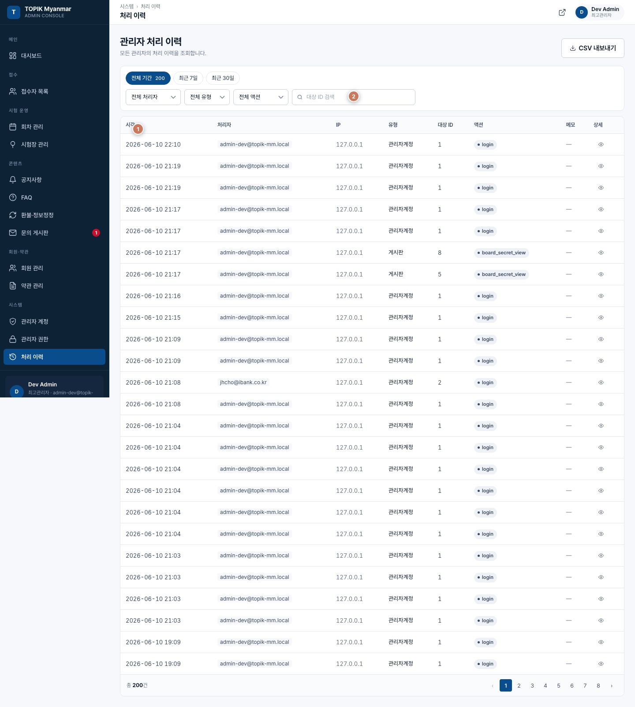
관리자가 한 승인·반려·수납·수정 등의 기록을 조회합니다. 분쟁·감사 시 「누가·언제·무엇을」 했는지 확인하는 화면입니다.
| 번호 | 요소 | 설명 |
|---|---|---|
| 1 | 이력 목록 | 기간·처리자·유형·액션 필터. 시각·처리자·대상·내용 요약. |
| 2 | 검색 | 대상 ID·키워드 등으로 검색. |
처리 이력 상세
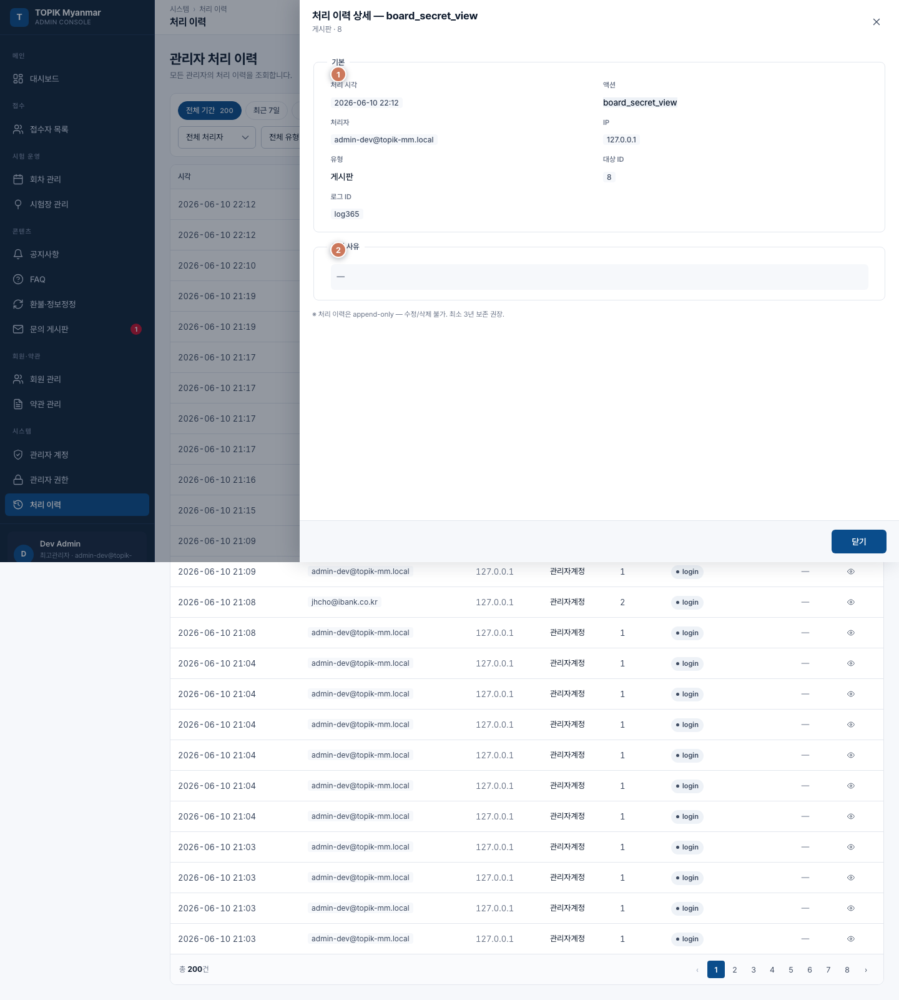
| 번호 | 요소 | 설명 |
|---|---|---|
| 1 | 처리 정보 | 처리 시각·담당자·유형·대상(접수자·회원 등). |
| 2 | 변경 내용 | 변경 전/후 값, 관련 화면으로 이동하는 링크(있는 경우). |
조회 범위: 최고관리자 = 전체 이력, 일반/조회 = 본인이 처리한 이력만. 접수자 상세와의 차이: 이 메뉴는 시스템 전체 처리 이력입니다. 접수자 목록 → 상세보기 → 처리 이력 탭은 해당 접수 건 한 건에 대한 이력만 보여 줍니다. CSV 내보내기: 최고관리자만. 필터 적용 결과를 파일로 저장. 보관: 이력은 수정·삭제 불가. 최소 3년 보관을 권장합니다.
관리자 접근 로그
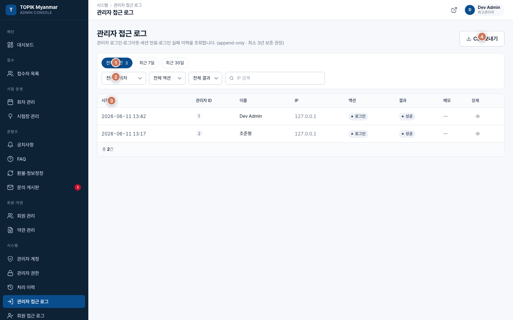
시스템 그룹 메뉴입니다. 관리자 계정의 로그인·로그아웃·세션 만료·로그인 실패 이력을 조회합니다. 최고관리자만 접근할 수 있습니다.
| 번호 | 요소 | 설명 |
|---|---|---|
| 1 | 기간 필터 | 전체 기간 / 최근 7일 / 최근 30일 칩. 전체 기간 칩에 전체 건수가 배지로 표시됩니다. |
| 2 | 상세 필터 | 관리자(드롭다운)·액션(로그인/로그아웃/세션만료/로그인실패)·결과(성공/실패)·IP 검색으로 목록을 좁힙니다. |
| 3 | 이력 목록 | 시각·관리자 ID·이름·IP·액션·결과·메모·상세(눈 아이콘) 열. 한 페이지 25행, 하단 페이지 이동. |
| 4 | CSV보내기 | 현재 필터가 적용된 결과를 CSV 파일로 저장합니다. 보내기 자체도 처리 이력에 기록됩니다. |
| 액션 | 의미 |
|---|---|
| 로그인 | 관리자 로그인 성공 |
| 로그아웃 | 관리자 로그아웃 |
| 세션만료 | 토큰 만료·재로그인 필요 |
| 로그인실패 | 비밀번호 오류·잠금 등 실패 |
관리자 접근 로그 상세
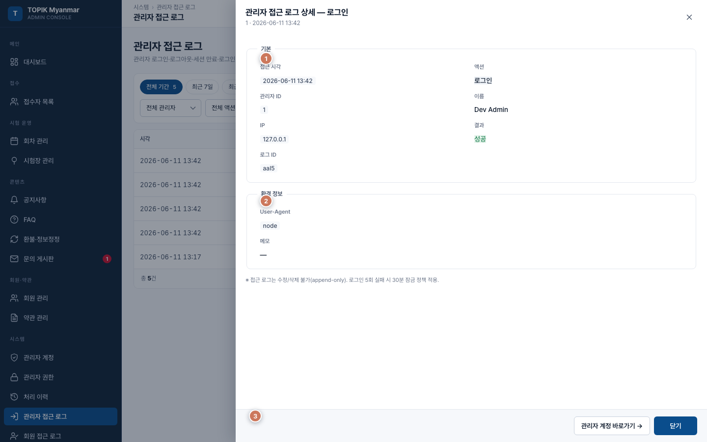
| 번호 | 요소 | 설명 |
|---|---|---|
| 1 | 기본 정보 | 접근 시각·액션·관리자 ID·이름·IP·결과·로그 ID. |
| 2 | 환경 정보 | User-Agent(브라우저·OS)·메모(실패 사유·세션 만료 안내 등). |
| 3 | 하단 버튼 | 관리자 계정 바로가기 → 해당 관리자 계정 화면. 닫기로 패널을 닫습니다. |
TIP: 로그인 5회 연속 실패 시 30분 잠금 정책이 적용됩니다. 잠금 의심 건은 결과=실패 + 액션=로그인실패로 필터하세요. 이력은 append-only(수정·삭제 불가). 최소 3년 보관을 권장합니다.
회원 접근 로그
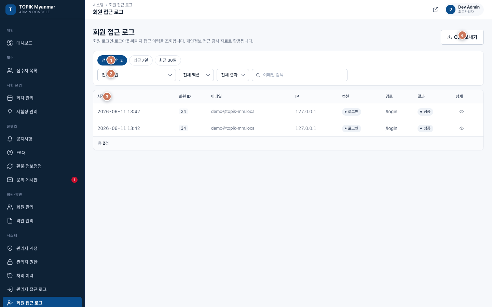
시스템 그룹 메뉴입니다. 응시자(회원)의 로그인·로그아웃·페이지 접근·로그인 실패 이력을 조회합니다. 개인정보 접근 감사 자료로 활용합니다. 최고관리자만 접근할 수 있습니다.
| 번호 | 요소 | 설명 |
|---|---|---|
| 1 | 기간 필터 | 전체 기간 / 최근 7일 / 최근 30일 칩. 전체 기간 칩에 전체 건수가 배지로 표시됩니다. |
| 2 | 상세 필터 | 회원(드롭다운)·액션(로그인/로그아웃/페이지접근/로그인실패)·결과(성공/실패)·이메일 검색으로 목록을 좁힙니다. |
| 3 | 이력 목록 | 시각·회원 ID·이메일·IP·액션·경로(페이지 URL)·결과·상세 열. 페이지접근 건은 어떤 화면에 들어갔는지 경로로 확인합니다. |
| 4 | CSV보내기 | 현재 필터 결과를 CSV로 저장합니다. 감사·분쟁 대비 자료로 활용하세요. |
| 액션 | 의미 |
|---|---|
| 로그인 | 회원 로그인 성공 |
| 로그아웃 | 회원 로그아웃 |
| 페이지접근 | 인증 후 주요 페이지 진입 기록 |
| 로그인실패 | 비밀번호 오류 등 |
회원 접근 로그 상세
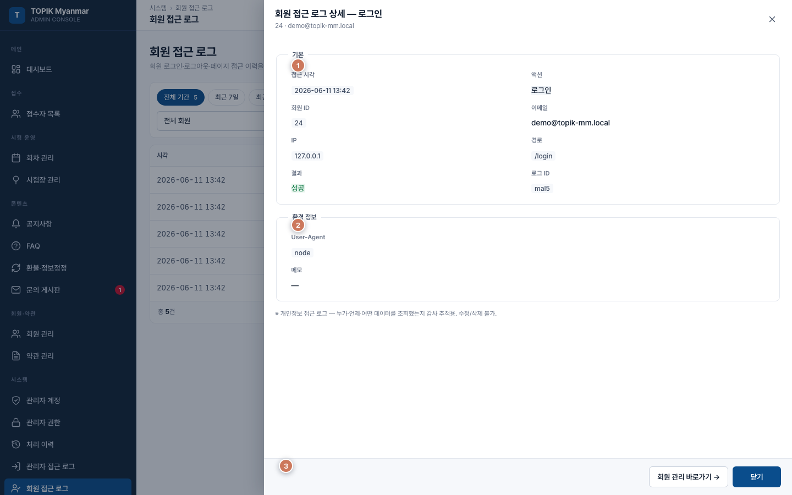
| 번호 | 요소 | 설명 |
|---|---|---|
| 1 | 기본 정보 | 접근 시각·액션·회원 ID·이메일·IP·경로·결과·로그 ID. |
| 2 | 환경 정보 | User-Agent·메모. |
| 3 | 하단 버튼 | 회원 관리 바로가기 → 해당 회원 상세. 닫기로 패널을 닫습니다. |
TIP: 「처리 이력」은 관리자가 한 업무 처리(승인·수납 등)이고, 이 메뉴는 회원의 접속·인증 기록입니다. 용도가 다릅니다.
권한 변경 이력
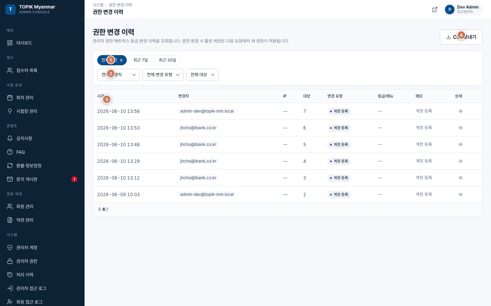
시스템 그룹 메뉴입니다. 관리자 권한 매트릭스·등급 변경 내역을 조회합니다. 권한 관련 처리 이력만 모아 보여 줍니다. 최고관리자만 접근할 수 있습니다.
| 번호 | 요소 | 설명 |
|---|---|---|
| 1 | 기간 필터 | 전체 기간 / 최근 7일 / 최근 30일 칩. |
| 2 | 상세 필터 | 변경자(최고관리자 목록)·변경 유형(메뉴 권한 변경/등급 변경/액션 추가·제거)·대상(관리자 ID 또는 권한매트릭스). |
| 3 | 이력 목록 | 시각·변경자·IP·대상·변경 유형·등급/메뉴·메모·상세 열. |
| 4 | CSV보내기 | 필터 결과를 CSV로 저장합니다. |
권한 변경 이력 상세
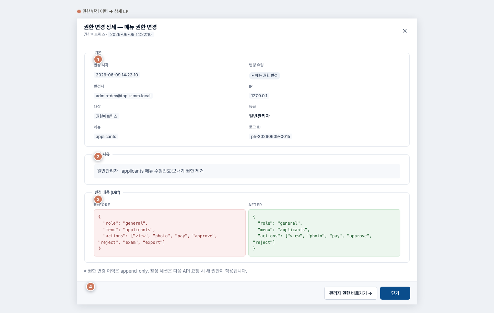
| 번호 | 요소 | 설명 |
|---|---|---|
| 1 | 기본 정보 | 변경 시각·변경 유형·변경자·IP·대상·등급·메뉴·로그 ID. |
| 2 | 변경 사유 | 권한 변경 시 입력한 메모·사유. |
| 3 | 변경 내용 (Diff) | Before / After JSON 비교. 메뉴별 권한·등급이 어떻게 바뀌었는지 확인합니다. |
| 4 | 하단 버튼 | 관리자 권한 바로가기 → 권한 표 화면. 닫기로 패널을 닫습니다. |
TIP: 권한을 변경한 직후에는 활성 세션에 바로 반영되지 않을 수 있습니다. 해당 관리자는 다음 API 요청부터 새 권한이 적용됩니다.
| 등급 | 주요 권한 | 이런 분에게 |
|---|---|---|
| 최고관리자 | 전 기능 + 수험번호 부여 + 관리자 계정 + 약관 게시·폐지 + 전체 이력·내보내기 | 운영 책임자·IT 담당 |
| 일반관리자 | 접수 처리 + 공지·FAQ·환불·문의 + 본인 이력 | 현장 접수·수납 담당 |
| 조회관리자 | 모든 화면 조회만(변경 버튼 비활성) | 통계·감사·보조 |
여러 관리자가 같은 접수 건을 동시에 열 수 있습니다. 다른 사람이 먼저 수납·승인·반려를 완료하면 「다른 관리자가 먼저 수정했습니다. 최신 데이터로 새로고침합니다.」 안내가 뜨고 목록이 갱신됩니다. 갱신된 상태를 확인한 뒤, 필요하면 다시 처리하세요. 같은 건을 두 번 수납하는 일은 없도록 설계되어 있습니다.
승인·반려·사진 반려·마케팅 공지 등 주요 처리 시 응시자·회원에게 이메일이 발송될 수 있습니다. 반려·사유 안내 문구는 응시자가 받는 내용과 동일하게 신중히 작성하세요.
| 내보내기 | 위치 | 내용 | 권한 |
|---|---|---|---|
| 연명부 엑셀 | 접수자 | 10항목, 지역·시험장·급수별 파일 | 최고 |
| 사진 ZIP | 접수자 | 폴더 구조 + 누락 리포트 | 최고 |
| 회원 CSV | 회원 | 가입·상태·마케팅 수신 등 | 최고 |
| 동의 이력 CSV | 약관 | 동의 시각·회원·약관·버전 | 최고 |
| 처리 이력 CSV | 처리 이력 | 필터 결과 전체 | 최고 |
| 권한 표 CSV | 권한 | 메뉴·액션·등급별 O/X | 최고 |
| 관리자 접근 로그 CSV | 관리자 접근 로그 | 필터 결과 | 최고 |
| 회원 접근 로그 CSV | 회원 접근 로그 | 필터 결과 | 최고 |
| 권한 변경 이력 CSV | 권한 변경 이력 | 필터 결과 | 최고 |
| 상황 | 원인 | 대처 |
|---|---|---|
| 수납 버튼이 비활성 | 사진 미승인 | 먼저 사진 승인 |
| 승인 버튼이 비활성 | 수납 미완료 또는 사진 미승인 | 사진 승인 → 수납 → 승인 순서 확인 |
| 상세 「처리 이력 (N)」 숫자가 이상함 | 전체 이력 메뉴와 혼동 | 상세 탭은 해당 접수 건만 집계. N=0이면 이력 없음 |
| 접수자 메뉴 배지가 기대와 다름 | 미수납만 집계 | 취소·반려·환불·이미 수납 완료 건은 배지 제외 |
| 「다른 관리자가 먼저 수정」 | 동시 처리 | 목록 갱신 후 상태 재확인 |
| 수험번호가 응시자에게 안 보임 | 노출 시점 전 | 노출 시점 일시 확인 |
| 수험번호 일괄 부여 0건 | 승인 전·이미 부여됨 | 승인 처리 후 상태 승인완료인지 확인 |
| 수험번호 부여 버튼 비활성 | super 아님 | 최고관리자 계정으로 로그인 |
| 수험번호 부여 오류(시험장) | exam_venue_id 불일치 | 시험장 관리 데이터·접수 시험장 확인 |
| 조회 계정으로 처리 불가 | 권한 부족 | 최고관리자에게 등급 변경 요청 |